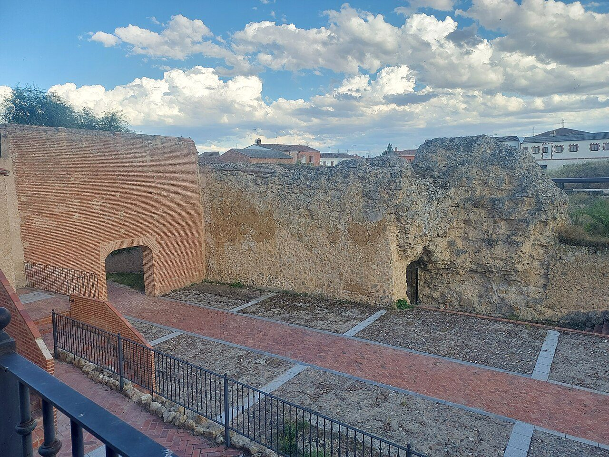
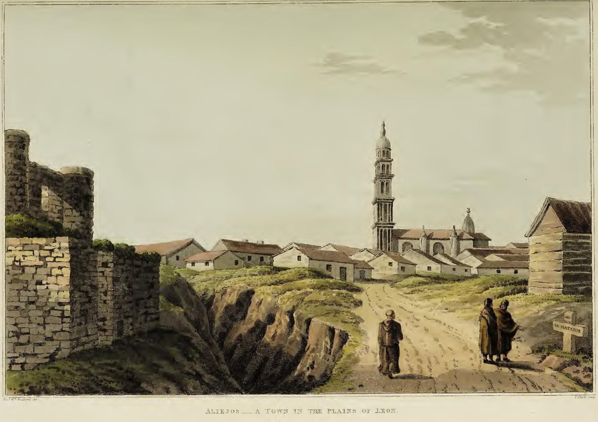
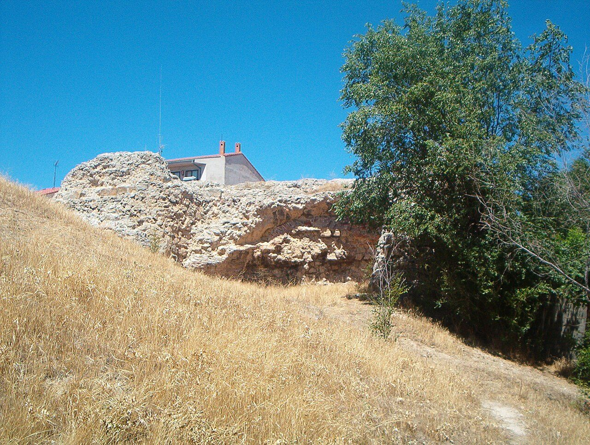
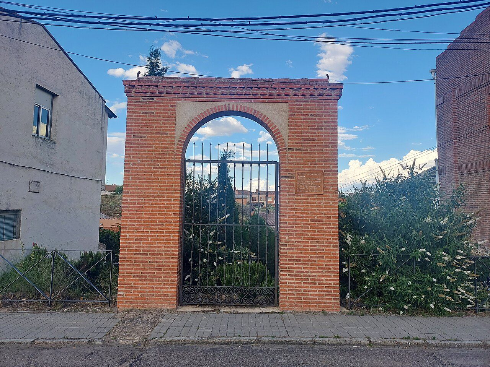

El castillo
La fortaleza de los Fonseca: lo que dicen los documentos, lo que repite la tradición y lo que hoy se conserva.


Del castillo de Alaejos quedan hoy lienzos de muro, el foso, galerías subterráneas, restos de dos baluartes y los pozos de agua y de nieve. Cuesta imaginar, ante lo que se ve, que fuera la cabeza del señorío de los Fonseca, que en él estuviera retenida una reina de Castilla y que resistiera tres meses el cerco de los comuneros. Esta página reúne lo que se sabe de él a partir de los documentos publicados, de los artículos de los programas de fiestas y de las excavaciones, y señala lo que todavía está en estudio.
En pocas palabras
Dónde: en el borde suroeste de la villa, en las últimas casas hacia Salamanca, rodeado por la Ronda del Castillo.
Época: un «castillo viejo» anterior a 1452; la fortaleza de Alonso de Fonseca, con licencia real de 1453; reformas de gusto morisco hacia 1485; un recinto exterior con baluartes de finales del siglo XVI.
Propiedad: Ayuntamiento de Alaejos.
Protección: bien de interés cultural, como todos los castillos españoles, por el decreto de 22 de abril de 1949; está además dentro del Conjunto Histórico de Alaejos (1997).
Antes de los Fonseca: el «castillo viejo»
Hasta mediados del siglo XV Alaejos fue una aldea de la Tierra de Medina del Campo. A finales de 1451 o en febrero de 1452, el príncipe Enrique, futuro Enrique IV y entonces señor de Medina, la separó de esa tierra, junto con Castrejón y Valdefuentes, y la entregó a Alonso de Fonseca, obispo de Ávila, que ya era señor de Coca. Medina recibió a cambio una renta anual de 20.000 maravedíes, que se le pagaba con retraso: en 1458 el rey mandó abonarle seis años atrasados. Así lo documenta Diego González Nieto (2023) y lo cuenta Javier Alonso Guinot en el programa de 2017.
Cuando llegó Fonseca ya había un castillo. Lo dice su propio testamento de 1460, que manda pagar a los dueños de «ciertas bodegas que están alrededor del castillo viejo» que él había hecho cegar. Y, según José Ojeda Nieto, lo decían también los cronistas de Medina que llegaron a leer el privilegio de 1452, hoy perdido, en el que constaba que hasta ese año Medina era dueña de Alaejos y de su castillo.
La fortaleza de Alonso de Fonseca
El 15 de julio de 1453, en Escalona, el rey Juan II dio licencia al obispo de Ávila para que pudiera hacer «qualquier fortaleza en la dicha vuestra villa de Alahejos». El texto de la carta lo publicó José M. Baraja en el programa de 2017. Según el historiador de los castillos Edward Cooper, las obras empezaron en 1456. Ese mismo año de 1453 Fonseca había fundado el mayorazgo de Coca y Alaejos, y en su testamento, otorgado en Valladolid el 3 de septiembre de 1460, lo dejó formado por «la fortaleza y villa de Alaejos» con Castrejón y Valdefuentes, la villa de Coca y una renta de 300.000 maravedíes.
Luis Vasallo Toranzo, que ha estudiado a fondo el linaje, dedica un apartado de su libro Los Fonseca: linaje y patronato artístico (2018) a «el arquitecto Gómez Díaz de Burgos: el castillo de Alaejos y la capilla de Toro». Es la pista más sólida sobre quién dirigió las obras del arzobispo.
Para no confundir a los Fonseca
- Alonso de Fonseca y Ulloa, «el Viejo» (Toro, hacia 1418 – Coca, 1473). Obispo de Ávila de 1445 a 1454 y después arzobispo de Sevilla. Primer señor de Coca y Alaejos, fundador del mayorazgo y del castillo, y custodio de la reina Juana.
- Fernando de Fonseca, su hermano, heredero designado en el testamento de 1460. Murió antes que él, en 1467.
- Alonso de Fonseca, sobrino del arzobispo e hijo de Fernando (murió en 1505). Heredó el mayorazgo tras largos pleitos, reformó el castillo de Alaejos y levantó el de Coca. Unos autores le cuentan como II señor y otros como III.
- Antonio de Fonseca, hermanastro del anterior y IV señor (o III). Contador mayor de Castilla y jefe de las tropas que incendiaron Medina del Campo en 1520.
- No hay que confundir al primero con Alonso de Fonseca y Quijada, otro obispo de Ávila (1469–1485), ni con Alonso de Fonseca y Acevedo, arzobispo de Santiago y Sevilla.
Un castillo de bandos: los asedios del siglo XV
El castillo nació en plena lucha entre bandos nobiliarios, y Fonseca cambió varias veces de partido. Cuando rompió con Enrique IV, hacia 1464, el rey mandó cercar Alaejos y Coca. Según Baraja, el cerco duró casi un año y se levantó cuando la nobleza reunida en Burgos obligó al rey a cambiar de política. Más tarde, hacia 1476 y 1477, en la guerra entre Isabel la Católica y los partidarios de Juana la Beltraneja, el castillo sirvió de base a las tropas isabelinas que combatieron en Toro y en Castronuño.
La reina Juana de Portugal, 1467–1468
Tras la batalla de Olmedo (20 de agosto de 1467) y la toma de Segovia por los partidarios del infante Alfonso, Enrique IV aceptó separar a la reina de su hija como garantía de la tregua. La niña, la princesa Juana, quedó con los Mendoza, y la reina fue puesta en manos del arzobispo Fonseca para que la retuviera en Alaejos. Salió de Segovia a comienzos de octubre de 1467 y, según José María Casado (programa de 2024), pasó primero por Coca y llegó a Alaejos después de Navidad. Desde aquí siguió haciendo política: en abril de 1468 un documento dice que la reina tenía ocupada la villa de Magaña, del marqués de Villena.
En Alaejos estaba también Pedro de Castilla, «el Mozo», sobrino del arzobispo. Los cronistas Alonso de Palencia y Galíndez de Carvajal cuentan que la reina quedó embarazada de él, y el escándalo, llamado después «el desliz de Alaejos», sirvió a sus enemigos para negar que la Beltraneja fuera hija del rey. En el verano de 1468, antes de mediados de agosto, la reina huyó del castillo. El cronista Diego Enríquez del Castillo dice que se descolgó de noche por los adarves «en un cesto» y que, como la soga era corta, cayó y se lastimó la cara y la pierna. Luis Hurtado de Mendoza la esperaba al pie del muro y la llevó en su mula hasta Buitrago, donde estaba su hija. Palencia atribuye la fuga a la complicidad de Juan de la Torre, criado del alcaide Luis de Miranda.
La «sala rica»: las obras moriscas del sobrino
El sobrino del arzobispo, Alonso de Fonseca, combatió en la guerra de Granada y volvió fascinado por el arte nazarí. Un testigo de un pleito de la familia, publicado por Vasallo (2014), cuenta que hizo traer de Granada piezas de carpintería para los artesonados que mandó montar hacia 1485 en su fortaleza de Alaejos, entre ellas «unas piñas ricas labradas de oro» para una estancia junto a la «sala rica». Otro testigo dice que en Alaejos trabajaron albañiles musulmanes de Ávila antes de empezar las obras de Coca. Alaejos fue, por tanto, el primer taller del gusto morisco de los Fonseca, que después llegaría a su máximo en el castillo de Coca.
En 1504 el castillo sirvió de prisión familiar. El mismo Alonso de Fonseca encerró aquí a su mujer y a su hija María, que se había casado en secreto con Rodrigo de Mendoza, marqués del Zenete. Al año siguiente su hermano Antonio temía que el marqués se apoderase de «la fortaleza de Coca e de Alaejos».
El cerco comunero de 1520
El 21 de agosto de 1520 las tropas reales de Antonio de Fonseca, señor de Alaejos, incendiaron Medina del Campo al intentar llevarse su artillería. Era el comienzo de la Guerra de las Comunidades, y Alaejos pagó la venganza. A finales de septiembre la Junta comunera ordenó confiscar las villas y fortalezas de Fonseca. El alcaide, Gonzalo Vela, se negó a entregar el castillo, y en octubre salieron de Medina tropas con artillería, a las que se sumaron gentes de Segovia con Juan Bravo, de Ávila, de Toledo y de Salamanca. Hubo escaramuzas, y el alcaide mandó ahorcar en lo alto de las almenas a Bobadilla, uno de los cabecillas de Medina. Los de fuera se fueron marchando y el cerco se levantó a comienzos de diciembre, tras la toma de Tordesillas por los realistas. La fortaleza no se rindió.
La villa lo pagó caro. Los comuneros saquearon pan, vino y madera y talaron montes y cosechas, y en 1522 los vecinos reclamaban más de 100.000 ducados de daños. Según los Apuntes sobre el señorío (programa de 2017), quemaron y derribaron también la torre de la antigua iglesia de San Pedro.
Cárcel, armería y casa de los señores
A finales del siglo XVI el castillo se rodeó de un segundo recinto, cuadrado, con baluartes en las esquinas y cañoneras para la artillería. Desde entonces fue sobre todo la sede del poder señorial. En él juraban su cargo los alcaides y los alcaldes mayores, se guardaban las armas de los señores y estaba la cárcel señorial, en los sótanos, frente a la cárcel del concejo. En 1599 el rey mandó traer preso a esta fortaleza al marqués de Cañete, García Hurtado de Mendoza, que había sido virrey del Perú, según cuenta Noé León (programa de 2026). Y en 1600 pasó por Alaejos el rey Felipe III, visita que recuerda una lápida en San Pedro.
Gracias a las cuentas y a las inspecciones de obras de los señores que reunió José Ojeda Nieto en el programa de 2011, se puede reconstruir cómo era por dentro:
- Se llegaba por un puente de fábrica con pretiles de ladrillo y piedra, que se seguía de un puente levadizo; en 1609 se usaban dos balas de hierro como contrapeso para levantarlo. Después había una reja de hierro con una campanilla y la puerta.
- Dentro estaba el patio, con la artillería, paneras y casas, y de él salían corredores con arcos de cantería; uno llevaba a la «sala Rica».
- Había dos torres principales: la del homenaje, llamada torreón de Peromato por la veleta en forma de caballero armado que la coronaba, con su propio puente, y otro torreón hacia la villa, «fundado sobre un arco de peña biba».
- El inventario de 1609 recoge tres culebrinas de bronce con las armas de los señores, 64 alabardas, 42 mosquetones grandes, 50 petos y espaldares y un tiro pedrero sobre la torre del homenaje.
- Había también un pozo de nieve sostenido por tres arcos de ladrillo bajo tierra, un oratorio, una sala con un retrato de Juan de Fonseca, la cárcel y, alrededor de las murallas, el camino de ronda, que en 1609 se llamaba «ronda de las criadas de su señoría».
El señorío pasó por herencia y matrimonio de los Fonseca a otras casas, como las de Ayala, Monterrey, Tarazona y Veragua. En 1739 murió Catalina Ventura Colón de Carvajal, señora de Coca y Alaejos, casada con el duque de Berwick y de Liria, y el señorío quedó en esa casa, que en 1802 heredó el ducado de Alba. Los señoríos jurisdiccionales se abolieron en el siglo XIX.
Decadencia y ruina
Los señores vivían cerca de la corte y apenas venían a Alaejos, y preferían conservar el castillo de Coca. Todavía se hacían reparaciones en el de Alaejos en 1640, 1651 y 1675, pero en el siglo XVIII empezó el abandono. Las excavaciones han mostrado que en la primera mitad de ese siglo algunas salas subterráneas se rellenaron de escombros y basura. Después los vecinos, con el consentimiento de los dueños, fueron llevándose la piedra y el ladrillo.
Pascual Madoz, hacia 1845–1850, lo describe así en su Diccionario: se halla «en malísimo estado, lo interior es antiguo y moderno lo exterior; se compone de 4 torreones, y un fuerte cuadrado flanqueado de 4 baluartes con cañoneras sólo en los lados». Es decir, todavía se distinguían el castillo del siglo XV y el recinto abaluartado posterior. En el siglo XX la urbanización fue rellenando el foso y se construyeron casas sobre parte del recinto; una de ellas, una antigua venta de la Ronda del Castillo, se derribó en 2016.
La única imagen antigua
No se conoce ningún plano ni dibujo antiguo del castillo completo. La única imagen es una lámina del capellán militar inglés William Bradford, que pasó por Alaejos con el ejército de Moore en diciembre de 1808. La tituló Aliejos. A town in the plains of Leon («Alaejos, un pueblo en las llanuras de León») y la publicó en Londres en 1809, en sus Sketches of the country, character, and costume, in Portugal and Spain. A la izquierda se ven los muros del castillo, con dos torreones redondos, alzados sobre el foso; al fondo, el caserío y la torre de San Pedro. El programa de fiestas de 1984 llevó en la portada un grabado de la villa y el castillo hallado en Londres, que su autor fechaba hacia 1700; por lo que cuenta, parece ser esta misma lámina. José Ojeda Nieto lamentaba que el dibujo dejara ver tan poco del castillo, pero es lo único que tenemos de cómo era antes de su ruina.

Lo que se ve hoy


El solar del castillo es casi un cuadrado, libre de construcciones, rodeado por el foso o «cava». Las excavaciones han sacado a la luz dos recintos. El interior, cuadrado y con torreones en las esquinas, corresponde en lo que se conserva a finales del siglo XV. El exterior, de finales del XVI, tiene baluartes en las esquinas. El foso, tallado en la roca, tenía unos 20 metros de ancho, y la entrada estaba en el lado norte, con puente levadizo. Por dentro de los muros corren galerías subterráneas con chimeneas de ventilación, y en el lado este se ve una poterna, una pequeña puerta para salir al foso.
Desde 2009 el Ayuntamiento ha ido recuperando el recinto:
- 2009–2011. Primeros trabajos, estudio con georradar y sondeos arqueológicos de la empresa Strato.
- 2016. Obras del programa del 1,5 % Cultural del Ministerio de Fomento, con 120.000 euros: se derribó una antigua venta de la Ronda del Castillo y se acondicionó el acceso al foso.
- 2017. Plan director del castillo, redactado por ADES Arqueología, que exigía Patrimonio para seguir con las obras. En la zona este se derribaron cuadras y almacenes para hacer un paseo ajardinado.
- 2019–2022. Vaciado de las galerías, descubrimiento del baluarte sureste, del nevero y, en 2021, de un pozo. En julio de 2021 Patrimonio autorizó arcos de refuerzo, escaleras y la consolidación del baluarte sureste.
- 2024. El Ministerio de Industria y Turismo concedió 2.996.126 euros de fondos europeos para la restauración y puesta en valor del castillo.
Hoy se puede recorrer el baluarte suroeste, las galerías, el baluarte sureste, las salas centrales y el nevero. El Ayuntamiento organiza visitas guiadas y recreaciones históricas como «El desliz de Alaejos». En la calle que rodea las ruinas está la Colección Etnográfica municipal, con más de mil piezas de oficios desaparecidos y de la vida cotidiana.


Dónde seguir buscando
El archivo de los señores de Coca y Alaejos se quemó casi entero en el incendio del palacio de Liria, en Madrid, durante la Guerra Civil. Por eso son tan valiosos los pleitos que se conservan en otros archivos. Para quien quiera investigar, estos son los más prometedores:
- Archivo de la Real Chancillería de Valladolid. El gran pleito entre los herederos de Alonso y de Antonio de Fonseca, con testigos sobre las obras de Alaejos y Coca: Pleitos Civiles, Ceballos Escalera (F), cajas 1122-1 a 1125-1. El pleito de Antonio de Fonseca por los daños del cerco de 1520: Pleitos Civiles, Moreno (F), caja 135-2. Y el pleito por la herencia del arzobispo (1483–1495), con el testamento de 1460: Pleitos Civiles, Alonso Rodríguez (D), cajas 15-1 a 18-1.
- Archivo General de Simancas. El Registro General del Sello de 1520 a 1523, con la investigación sobre los daños de Alaejos, y las Respuestas Generales del Catastro de Ensenada (1751–1752), que deben decir en qué estado estaba el castillo y de quién era.
- Archivo de la Casa de Alba (palacio de Liria). Lo que se salvó del archivo de Coca y Alaejos, y las cuentas del castillo en los siglos XVIII y XIX.
- Archivo Histórico Provincial de Valladolid. Los protocolos notariales de Alaejos, donde puede haber contratos de obras y ventas de piedra del castillo.
Para seguir leyendo
- En la biblioteca de los programas de fiestas: José Ojeda Nieto, «El castillo según los documentos» (2011); José M. Baraja, «A propósito del castillo» (2017) y «Los señores de Alaejos» (2013); Javier Alonso Guinot, «Apuntes sobre el señorío de Alaejos» (2017); Felipe de Perlines, «El desliz de Alaejos de Juana de Portugal» (2015); José María Casado, «Contestando a mis lectores» (2024); y la descripción de Madoz en «Alaejos de otros tiempos» (1991).
- Luis Vasallo Toranzo, Los Fonseca: linaje y patronato artístico (Universidad de Valladolid, 2018), y «El castillo de Coca y los Fonseca», Anales de Historia del Arte, 24 (2014).
- Diego González Nieto, Alfonso de Fonseca y Ulloa: la Casa de un arzobispo de Sevilla en el siglo XV (Dykinson, 2023).
- María del Pilar Carceller Cerviño, «El papel político de Juana de Portugal en la defensa de los derechos sucesorios de su hija», Espacio, Tiempo y Forma. Serie III, 37 (2024).
- Ficha del castillo en la web de patrimonio de la Junta de Castilla y León y en la de la Asociación Española de Amigos de los Castillos.
- Fotografías de libre uso en Wikimedia Commons.